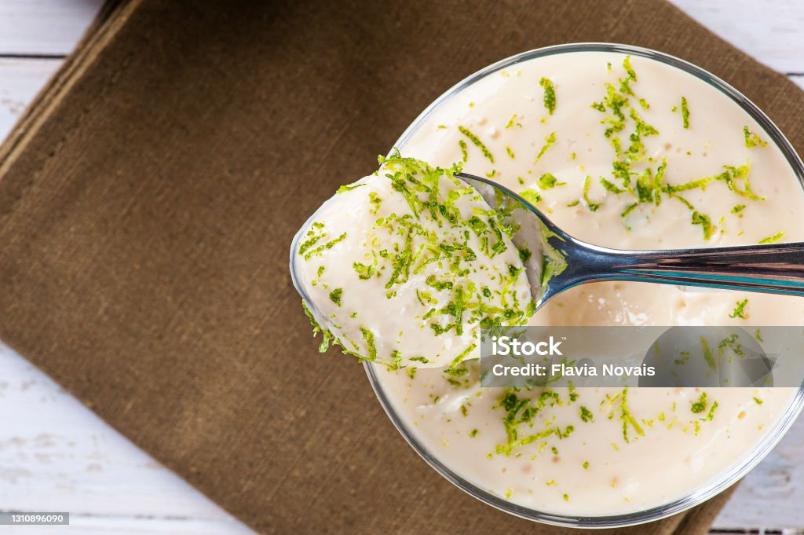

Mousse de limão para refrescar os dias quentes.
Ingredientes
1 lata de leite condensado;
1 lata de creme de leite;
1/2 xícara de suco de limão (o suco puro).
Modo de Preparo
No liquidificador, coloque o creme de leite e o leite condensado. Bata até que fico homogêneo;
Acrescente aos poucos o suco do limão;
Bata um pouco e quando estiver bem consistente leva à geladeira;
Deixe na geladeira por cerca de 1 hora;
Use raspas da casca do limão para decorar.
Essa receita é prática e refrescante, perfeita para os dias quentes! Ensinamos a receita básica, mas é possível personalizar e deixar o mousse ainda mais saboroso.
Adicionar pedaços de chocolate, nozes ou biscoito triturado são boas ideias. Fique a vontade para personalizar como achar melhor!